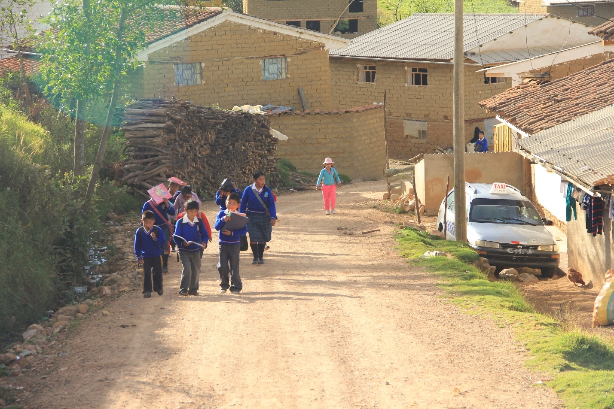
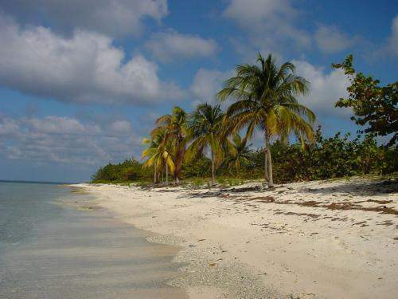
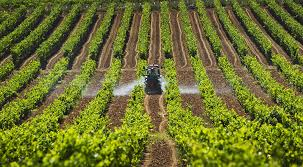
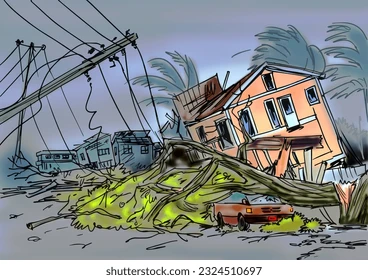

Poblaciones beneficiadas
¿Cuales serian las poblaciones beneficiadas con el proyecto?
1- Comunidades rurales y remotas:
Estas baterías pueden proporcionar almacenamiento de energía asequible y seguro en áreas sin acceso confiable a la red eléctrica. La energia basada en agua salada, que utiliza procesos electroquimicos simples, puede ofrecer una fuente de electricidad reduciendo la dependencia de combustibles fosiles, ademas de que podria llegar a ser mas asequible y facil de mantener
2- Zonas costeras:
Las comunidades cercanas al mar podrian beneficiarse especialmente, ya que el agua salada es un recurso facilmente disponible para el funcionamiento de estas baterias. Estas comunidades pueden desarrollar infraestructura energetica local que no depends de las redes electricas centrales, lo que es util en zonas remotas o aisladas donde extender la red electrica seria costoso o tecnicamente dificil
3- Areas en desarrollo:
En regiones con infraestructura electrica limitada, las baterias de agua salada es un recurso facilmente disponible para el funcionamiento de estas baterias. Con acceso a esta energia se puede impulsar actividades productivas, lo que puede generar empleo y fomentar el desarrollo economico local.
4- Areas propensas a desastres naturales:
Dado que estas baterias son seguras y no presentan riesgos de incendio, son ideales para su usoen regiones donde la seguridad y la resisilencia son prioritarias